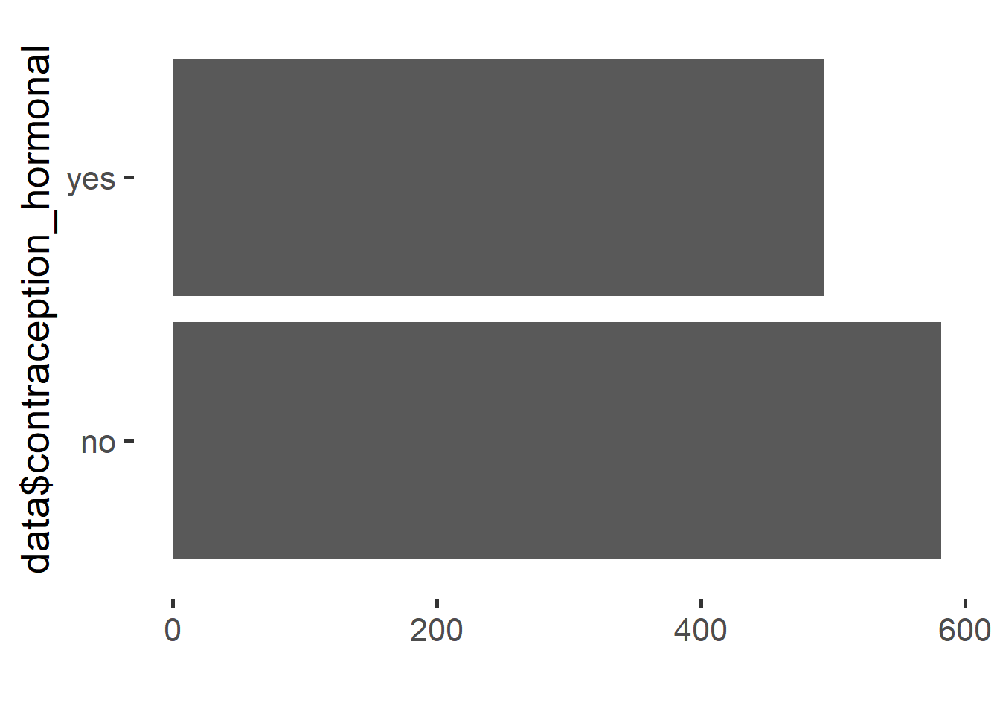
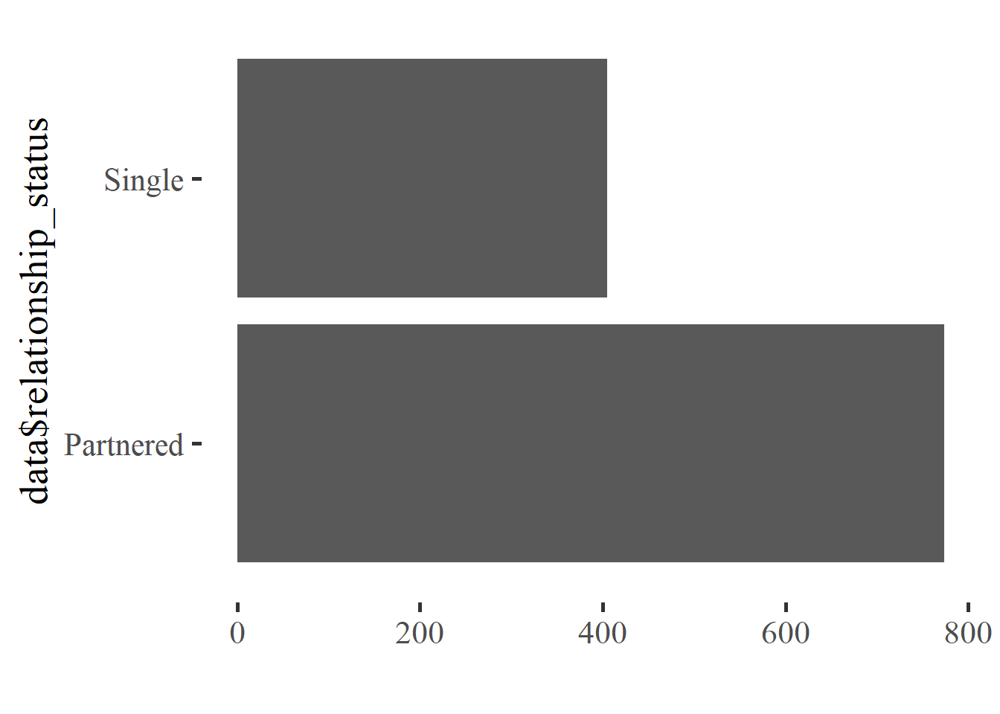
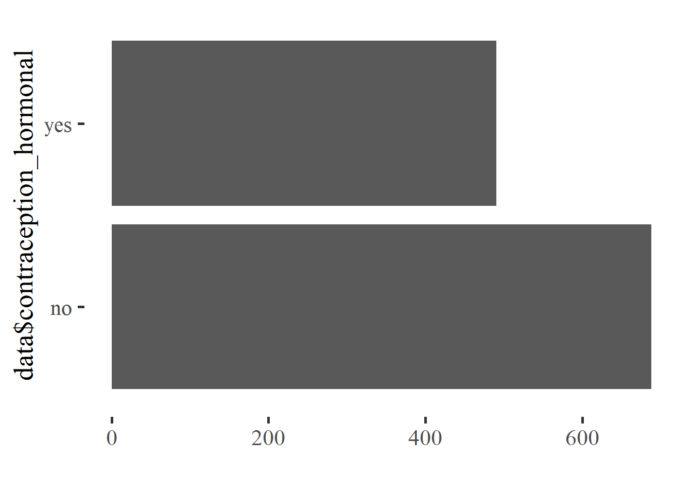
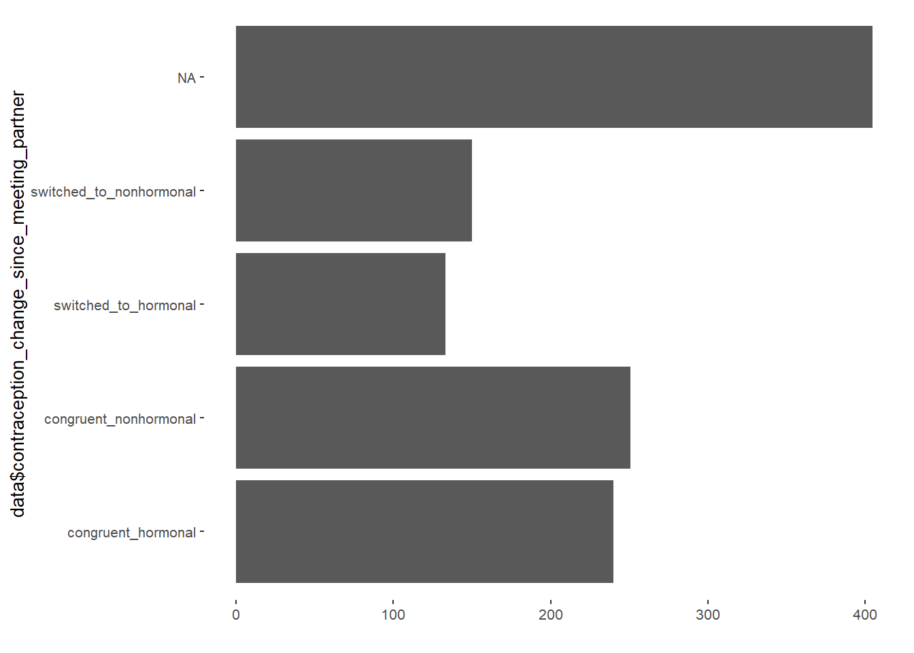
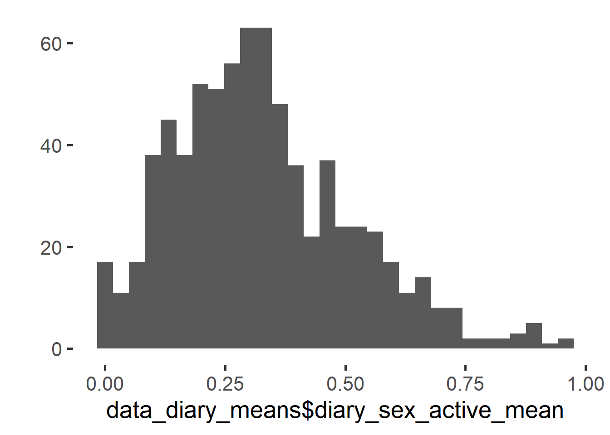
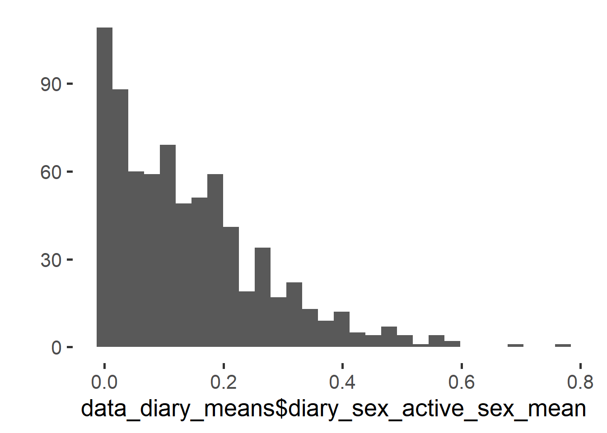

Datawrangling
Data and Functions
source("0_helpers.R")
knitr::opts_chunk$set(warning = FALSE, message = FALSE)
pander::panderOptions("table.split.table", Inf)
pander::panderOptions('round',2)
pander::panderOptions('digits',2)
pander::panderOptions('keep.trailing.zeros',TRUE)
load("data/cleaned_selected.rdata")Select Variables
Initial Survey
data = all_surveys %>%
select(session,
age,
education_years,
net_income,
starts_with("bfi_agree"),
starts_with("bfi_consc"),
starts_with("bfi_open"),
starts_with("bfi_extra"),
starts_with("bfi_neuro"),
religiosity,
pregnant_stress,
duration_relationship_years,
duration_relationship_month,
days_with_partner,
nights_with_partner,
starts_with("soi_r"),
soi_r_behavior,
soi_r_desire,
number_sexual_partner,
contraception_method,
contraception_approach,
contraception_method_broad,
contraception_meeting_partner,
partner_attractiveness_face,
partner_attractiveness_body,
relationship_satisfaction_overall,
relationship_satisfaction_2,
relationship_satisfaction_3,
relationship_problems_R,
relationship_conflict_R,
satisfaction_sexual_intercourse,
reasons_for_exclusion,
pregnant_trying)Diary
data_diary = diary %>%
select(session,
reasons_for_exclusion,
high_libido,
sex_active, sex_activity_anal_sex, sex_activity_bdsm_dom, sex_activity_bdsm_sub,
sex_activity_cuddling, sex_activity_cunnilingus, sex_activity_cybersex,
sex_activity_dirty_talk,
sex_activity_fellatio, sex_activity_kissing, sex_activity_masturbated_by_partner,
sex_activity_masturbated_partner, sex_activity_masturbation, sex_activity_other,
sex_activity_phone_skype_sex, sex_activity_pornography, sex_activity_sex,
sex_activity_touch_other,
sex_activity_toys, sex_activity_unclear, sex_other, sex_solo, sex_unclear,
days_done)Exclusion
Initial Survey
n_excluded = data %>% filter(reasons_for_exclusion != "") %>% nrow()
data = data %>% filter(reasons_for_exclusion == "")585 people were excluded.
Diary
Exclusion criteria based on initial
session_codes = data$session
data_diary = data_diary %>%
filter(session %in% session_codes)
length(data_diary$session)## [1] 48067The 1075 participants filled out 48067.
Skipped diary entry
n_skipped_diary = data_diary %>%
filter(reasons_for_exclusion %contains% "skipped_diary_entry") %>%
count()
data_diary = data_diary %>%
filter(!(reasons_for_exclusion %contains% "skipped_diary_entry"))676 days were skipped.
Dishonest answers
n_dishonest = data_diary %>%
filter(reasons_for_exclusion %contains% "dishonest") %>%
count()
data_diary = data_diary %>%
filter(!(reasons_for_exclusion %contains% "dishonest"))126 days contained dishonest answers.
Filled out less than 30 days
number_of_days = data_diary %>%
group_by(session) %>%
summarise(n = n()) %>%
rename(number_of_days = n)
data_diary = left_join(data_diary, number_of_days, by = "session")
data_diary_include = data_diary %>%
filter(as.numeric(number_of_days) > 30)
data_diary_exclude = data_diary %>%
filter(as.numeric(number_of_days) <= 30)
data_diary = data_diary_include300 participants were excluded because they filled out less than 30 days - resulting in 4149 excluded days.
Summary
In total 740 participants with 43116 diary days were included for the analyses in which outcomes were based on diary information.
Wrangle data
Contraception approach
data = data %>% mutate(
contraception_method = if_else(is.na(contraception_method), "",
as.character(contraception_method)),
com = contraception_method,
contraception_approach = if_else(
condition = com %contains% "hormonal_pill" | com %contains% "hormonal_other",
true = if_else(
condition = com == "hormonal_pill" | com == "hormonal_other" |
com == "hormonal_morning_after_pill",
true = if_else(com == "hormonal_pill",
true = "hormonal_pill_only",
false = "hormonal_other_only"),
false = "hormonal+barrier"),
if_else(
condition = ! com %contains% "awareness",
true = if_else(condition = com != "",
true = if_else(condition = com %contains% "barrier_intrauterine_pessar",
true = "barrier_pessar",
if_else(condition = com %contains% "barrier_condoms",
true = "condoms",
false = "other")),
false = "nothing"),
false = "awareness")))
data$contraception_approach = factor(data$contraception_approach,
levels = c("condoms", "barrier_pessar",
"hormonal+barrier",
"hormonal_pill_only", "hormonal_other_only",
"awareness", "nothing", "other"))
qplot(data$contraception_approach) + coord_flip()
table(data$contraception_approach)##
## condoms barrier_pessar hormonal+barrier hormonal_pill_only hormonal_other_only
## 371 86 178 254 61
## awareness nothing other
## 111 0 14Current contraceptive status (hormonal vs. non hormonal)
data = data %>% mutate(
contraception_hormonal = factor(ifelse(contraception_approach %contains% "hormonal",
"yes",
"no")))
qplot(data$contraception_hormonal) + coord_flip()
Changed contraception since meeting their partner
There will be NAs because we asked about contracetion when meeting partner only if participants were currently in a relationship
crosstabs(~contraception_hormonal + contraception_meeting_partner, data = data)## contraception_meeting_partner
## contraception_hormonal 0 1 <NA>
## no 229 144 209
## yes 134 241 118data = data %>% mutate(
contraception_change_since_meeting_partner =
ifelse(contraception_hormonal == "yes" & contraception_meeting_partner == 1,
"congruent_hormonal",
ifelse(contraception_hormonal == "no" & contraception_meeting_partner == 0,
"congruent_nonhormonal",
ifelse(contraception_hormonal == "yes" & contraception_meeting_partner == 0,
"switched_to_hormonal",
ifelse(contraception_hormonal == "no" &
contraception_meeting_partner == 1, "switched_to_nonhormonal",
NA)))))
qplot(data$contraception_change_since_meeting_partner) + coord_flip()
Contraception meeting partner
data = data %>%
mutate(contraception_meeting_partnerx = factor(if_else(
contraception_meeting_partner == 1,
"yes", "no")))Relationship status (single vs partnered)
data = data %>% mutate(
relationship_status = ifelse(is.na(duration_relationship_month), "Single", "Partnered"))
qplot(data$relationship_status) + coord_flip()
Diary information
calculate mean of libido, sex_active_frequency and actual sex frequency based on diary
data_diary_means = data_diary %>%
group_by(session) %>%
summarise(diary_libido_mean = mean(high_libido, na.rm = T),
diary_sex_active_mean = mean(sex_active, na.rm = T),
diary_sex_active_sex_mean = mean(sex_activity_sex, na.rm = T))
qplot(data_diary_means$diary_libido_mean)
qplot(data_diary_means$diary_sex_active_mean)
qplot(data_diary_means$diary_sex_active_sex_mean)
data = left_join(data, data_diary_means, by = "session")Save Data
save(data, data, file = "data/cleaned_selected_wrangled.rdata")CiMgRGF0YXdyYW5nbGluZyB7LnRhYnNldH0KCiMjIERhdGEgYW5kIEZ1bmN0aW9ucwpgYGB7ciBkYXRhIGFuZCBmdW5jdGlvbiwgcmVzdWx0cz0naGlkZScsbWVzc2FnZT1GLHdhcm5pbmc9Rn0Kc291cmNlKCIwX2hlbHBlcnMuUiIpCmtuaXRyOjpvcHRzX2NodW5rJHNldCh3YXJuaW5nID0gRkFMU0UsIG1lc3NhZ2UgPSBGQUxTRSkKcGFuZGVyOjpwYW5kZXJPcHRpb25zKCJ0YWJsZS5zcGxpdC50YWJsZSIsIEluZikKcGFuZGVyOjpwYW5kZXJPcHRpb25zKCdyb3VuZCcsMikKcGFuZGVyOjpwYW5kZXJPcHRpb25zKCdkaWdpdHMnLDIpCnBhbmRlcjo6cGFuZGVyT3B0aW9ucygna2VlcC50cmFpbGluZy56ZXJvcycsVFJVRSkKCmxvYWQoImRhdGEvY2xlYW5lZF9zZWxlY3RlZC5yZGF0YSIpCmBgYAoKCiMjIFNlbGVjdCBWYXJpYWJsZXMgey50YWJzZXR9CiMjIyBJbml0aWFsIFN1cnZleQpgYGB7ciBzZWxlY3QgdmFyaWFibGVzfQpkYXRhID0gYWxsX3N1cnZleXMgJT4lCiAgc2VsZWN0KHNlc3Npb24sCiAgICAgICAgIGFnZSwKICAgICAgICAgZWR1Y2F0aW9uX3llYXJzLAogICAgICAgICBuZXRfaW5jb21lLAogICAgICAgICBzdGFydHNfd2l0aCgiYmZpX2FncmVlIiksCiAgICAgICAgIHN0YXJ0c193aXRoKCJiZmlfY29uc2MiKSwKICAgICAgICAgc3RhcnRzX3dpdGgoImJmaV9vcGVuIiksCiAgICAgICAgIHN0YXJ0c193aXRoKCJiZmlfZXh0cmEiKSwKICAgICAgICAgc3RhcnRzX3dpdGgoImJmaV9uZXVybyIpLAogICAgICAgICByZWxpZ2lvc2l0eSwKICAgICAgICAgcHJlZ25hbnRfc3RyZXNzLAogICAgICAgICBkdXJhdGlvbl9yZWxhdGlvbnNoaXBfeWVhcnMsCiAgICAgICAgIGR1cmF0aW9uX3JlbGF0aW9uc2hpcF9tb250aCwKICAgICAgICAgZGF5c193aXRoX3BhcnRuZXIsCiAgICAgICAgIG5pZ2h0c193aXRoX3BhcnRuZXIsCiAgICAgICAgIHN0YXJ0c193aXRoKCJzb2lfciIpLAogICAgICAgICBzb2lfcl9iZWhhdmlvciwKICAgICAgICAgc29pX3JfZGVzaXJlLAogICAgICAgICBudW1iZXJfc2V4dWFsX3BhcnRuZXIsCiAgICAgICAgIGNvbnRyYWNlcHRpb25fbWV0aG9kLAogICAgICAgICBjb250cmFjZXB0aW9uX2FwcHJvYWNoLAogICAgICAgICBjb250cmFjZXB0aW9uX21ldGhvZF9icm9hZCwKICAgICAgICAgY29udHJhY2VwdGlvbl9tZWV0aW5nX3BhcnRuZXIsCiAgICAgICAgIHBhcnRuZXJfYXR0cmFjdGl2ZW5lc3NfZmFjZSwKICAgICAgICAgcGFydG5lcl9hdHRyYWN0aXZlbmVzc19ib2R5LAogICAgICAgICByZWxhdGlvbnNoaXBfc2F0aXNmYWN0aW9uX292ZXJhbGwsCiAgICAgICAgIHJlbGF0aW9uc2hpcF9zYXRpc2ZhY3Rpb25fMiwKICAgICAgICAgcmVsYXRpb25zaGlwX3NhdGlzZmFjdGlvbl8zLAogICAgICAgICByZWxhdGlvbnNoaXBfcHJvYmxlbXNfUiwKICAgICAgICAgcmVsYXRpb25zaGlwX2NvbmZsaWN0X1IsCiAgICAgICAgIHNhdGlzZmFjdGlvbl9zZXh1YWxfaW50ZXJjb3Vyc2UsCiAgICAgICAgIHJlYXNvbnNfZm9yX2V4Y2x1c2lvbiwKICAgICAgICAgcHJlZ25hbnRfdHJ5aW5nKQpgYGAKCiMjIyBEaWFyeQpgYGB7ciBzZWxlY3QgdmFyaWFibGVzIGRpYXJ5fQpkYXRhX2RpYXJ5ID0gZGlhcnkgJT4lCiAgc2VsZWN0KHNlc3Npb24sCiAgICAgICAgIHJlYXNvbnNfZm9yX2V4Y2x1c2lvbiwKICAgICAgICAgaGlnaF9saWJpZG8sCiAgICAgICAgIHNleF9hY3RpdmUsIHNleF9hY3Rpdml0eV9hbmFsX3NleCwgc2V4X2FjdGl2aXR5X2Jkc21fZG9tLCBzZXhfYWN0aXZpdHlfYmRzbV9zdWIsCiAgICAgICAgIHNleF9hY3Rpdml0eV9jdWRkbGluZywgc2V4X2FjdGl2aXR5X2N1bm5pbGluZ3VzLCBzZXhfYWN0aXZpdHlfY3liZXJzZXgsCiAgICAgICAgIHNleF9hY3Rpdml0eV9kaXJ0eV90YWxrLAogICAgICAgICBzZXhfYWN0aXZpdHlfZmVsbGF0aW8sIHNleF9hY3Rpdml0eV9raXNzaW5nLCAgc2V4X2FjdGl2aXR5X21hc3R1cmJhdGVkX2J5X3BhcnRuZXIsCiAgICAgICAgIHNleF9hY3Rpdml0eV9tYXN0dXJiYXRlZF9wYXJ0bmVyLCBzZXhfYWN0aXZpdHlfbWFzdHVyYmF0aW9uLCBzZXhfYWN0aXZpdHlfb3RoZXIsCiAgICAgICAgIHNleF9hY3Rpdml0eV9waG9uZV9za3lwZV9zZXgsIHNleF9hY3Rpdml0eV9wb3Jub2dyYXBoeSwgc2V4X2FjdGl2aXR5X3NleCwgCiAgICAgICAgIHNleF9hY3Rpdml0eV90b3VjaF9vdGhlciwgCiAgICAgICAgIHNleF9hY3Rpdml0eV90b3lzLCBzZXhfYWN0aXZpdHlfdW5jbGVhciwgIHNleF9vdGhlciwgc2V4X3NvbG8sIHNleF91bmNsZWFyLAogICAgICAgICBkYXlzX2RvbmUpCmBgYAoKCiMjIEV4Y2x1c2lvbiB7LnRhYnNldH0KIyMjIEluaXRpYWwgU3VydmV5CmBgYHtyIGV4Y2x1c2lvbiBpbml0aWFsIHN1cnZleX0Kbl9leGNsdWRlZCA9IGRhdGEgJT4lIGZpbHRlcihyZWFzb25zX2Zvcl9leGNsdXNpb24gIT0gIiIpICU+JSBucm93KCkKZGF0YSA9IGRhdGEgJT4lIGZpbHRlcihyZWFzb25zX2Zvcl9leGNsdXNpb24gPT0gIiIpCmBgYApgciBuX2V4Y2x1ZGVkYCBwZW9wbGUgd2VyZSBleGNsdWRlZC4KCiMjIyBEaWFyeSAgey50YWJzZXR9CiMjIyMgRXhjbHVzaW9uIGNyaXRlcmlhIGJhc2VkIG9uIGluaXRpYWwKYGBge3J9CnNlc3Npb25fY29kZXMgPSBkYXRhJHNlc3Npb24KCmRhdGFfZGlhcnkgPSBkYXRhX2RpYXJ5ICU+JQogIGZpbHRlcihzZXNzaW9uICVpbiUgc2Vzc2lvbl9jb2RlcykKCmxlbmd0aChkYXRhX2RpYXJ5JHNlc3Npb24pCmBgYApUaGUgYHIgbGVuZ3RoKHVuaXF1ZShkYXRhX2RpYXJ5JHNlc3Npb24pKWAgcGFydGljaXBhbnRzIGZpbGxlZCBvdXQgYHIgbGVuZ3RoKGRhdGFfZGlhcnkkc2Vzc2lvbilgLgoKIyMjIyBTa2lwcGVkIGRpYXJ5IGVudHJ5CmBgYHtyfQpuX3NraXBwZWRfZGlhcnkgPSBkYXRhX2RpYXJ5ICU+JQogIGZpbHRlcihyZWFzb25zX2Zvcl9leGNsdXNpb24gJWNvbnRhaW5zJSAic2tpcHBlZF9kaWFyeV9lbnRyeSIpICU+JQogIGNvdW50KCkKCmRhdGFfZGlhcnkgPSBkYXRhX2RpYXJ5ICU+JQogIGZpbHRlcighKHJlYXNvbnNfZm9yX2V4Y2x1c2lvbiAlY29udGFpbnMlICJza2lwcGVkX2RpYXJ5X2VudHJ5IikpCmBgYApgciBuX3NraXBwZWRfZGlhcnlgIGRheXMgd2VyZSBza2lwcGVkLgoKIyMjIyBEaXNob25lc3QgYW5zd2VycwpgYGB7cn0Kbl9kaXNob25lc3QgPSBkYXRhX2RpYXJ5ICU+JQogIGZpbHRlcihyZWFzb25zX2Zvcl9leGNsdXNpb24gJWNvbnRhaW5zJSAiZGlzaG9uZXN0IikgJT4lCiAgY291bnQoKQoKZGF0YV9kaWFyeSA9IGRhdGFfZGlhcnkgJT4lCiAgZmlsdGVyKCEocmVhc29uc19mb3JfZXhjbHVzaW9uICVjb250YWlucyUgImRpc2hvbmVzdCIpKQpgYGAKYHIgbl9kaXNob25lc3RgIGRheXMgY29udGFpbmVkIGRpc2hvbmVzdCBhbnN3ZXJzLgoKIyMjIyBGaWxsZWQgb3V0IGxlc3MgdGhhbiAzMCBkYXlzCmBgYHtyfQpudW1iZXJfb2ZfZGF5cyA9IGRhdGFfZGlhcnkgJT4lCiAgZ3JvdXBfYnkoc2Vzc2lvbikgJT4lCiAgc3VtbWFyaXNlKG4gPSBuKCkpICU+JQogIHJlbmFtZShudW1iZXJfb2ZfZGF5cyA9IG4pCiAgCmRhdGFfZGlhcnkgPSBsZWZ0X2pvaW4oZGF0YV9kaWFyeSwgbnVtYmVyX29mX2RheXMsIGJ5ID0gInNlc3Npb24iKQoKZGF0YV9kaWFyeV9pbmNsdWRlID0gZGF0YV9kaWFyeSAlPiUKICBmaWx0ZXIoYXMubnVtZXJpYyhudW1iZXJfb2ZfZGF5cykgPiAzMCkKCmRhdGFfZGlhcnlfZXhjbHVkZSA9IGRhdGFfZGlhcnkgJT4lCiAgZmlsdGVyKGFzLm51bWVyaWMobnVtYmVyX29mX2RheXMpIDw9IDMwKQoKZGF0YV9kaWFyeSA9IGRhdGFfZGlhcnlfaW5jbHVkZQpgYGAKYHIgbGVuZ3RoKHVuaXF1ZShkYXRhX2RpYXJ5X2V4Y2x1ZGUkc2Vzc2lvbikpYCBwYXJ0aWNpcGFudHMgd2VyZSBleGNsdWRlZCBiZWNhdXNlIHRoZXkgZmlsbGVkIG91dCBsZXNzIHRoYW4gMzAgZGF5cyAtIHJlc3VsdGluZyBpbiBgciBsZW5ndGgoZGF0YV9kaWFyeV9leGNsdWRlJHNlc3Npb24pYCBleGNsdWRlZCBkYXlzLgoKIyMjIyBTdW1tYXJ5IHsuYWN0aXZlfQpJbiB0b3RhbCBgciBsZW5ndGgodW5pcXVlKGRhdGFfZGlhcnkkc2Vzc2lvbikpYCBwYXJ0aWNpcGFudHMgd2l0aCBgciBsZW5ndGgoZGF0YV9kaWFyeSRzZXNzaW9uKWAgZGlhcnkgZGF5cyB3ZXJlIGluY2x1ZGVkIGZvciB0aGUgYW5hbHlzZXMgaW4gd2hpY2ggb3V0Y29tZXMgd2VyZSBiYXNlZCBvbiBkaWFyeSBpbmZvcm1hdGlvbi4gCgojIyBXcmFuZ2xlIGRhdGEgey50YWJzZXR9CiMjIyBDb250cmFjZXB0aW9uIGFwcHJvYWNoCmBgYHtyIGNvbnRyYWNlcHRpb24gYXBwcm9hY2h9CmRhdGEgPSBkYXRhICU+JSBtdXRhdGUoCiAgICBjb250cmFjZXB0aW9uX21ldGhvZCA9IGlmX2Vsc2UoaXMubmEoY29udHJhY2VwdGlvbl9tZXRob2QpLCAiIiwKICAgICAgICAgICAgICAgICAgICAgICAgICAgICAgICAgICBhcy5jaGFyYWN0ZXIoY29udHJhY2VwdGlvbl9tZXRob2QpKSwKICAgIGNvbSA9IGNvbnRyYWNlcHRpb25fbWV0aG9kLAogICAgY29udHJhY2VwdGlvbl9hcHByb2FjaCA9IGlmX2Vsc2UoCiAgICAgICAgY29uZGl0aW9uID0gY29tICVjb250YWlucyUgImhvcm1vbmFsX3BpbGwiIHwgY29tICVjb250YWlucyUgImhvcm1vbmFsX290aGVyIiwKICAgICAgICB0cnVlID0gaWZfZWxzZSgKICAgICAgICAgICAgY29uZGl0aW9uID0gY29tID09ICJob3Jtb25hbF9waWxsIiB8IGNvbSA9PSAiaG9ybW9uYWxfb3RoZXIiIHwKICAgICAgICAgICAgICBjb20gPT0gImhvcm1vbmFsX21vcm5pbmdfYWZ0ZXJfcGlsbCIsCiAgICAgICAgICAgIHRydWUgPSBpZl9lbHNlKGNvbSA9PSAiaG9ybW9uYWxfcGlsbCIsIAogICAgICAgICAgICAgICAgICAgICAgICAgICB0cnVlID0gImhvcm1vbmFsX3BpbGxfb25seSIsCiAgICAgICAgICAgICAgICAgICAgICAgICAgIGZhbHNlID0gImhvcm1vbmFsX290aGVyX29ubHkiKSwKICAgICAgICAgICAgZmFsc2UgPSAiaG9ybW9uYWwrYmFycmllciIpLAogICAgICAgIGlmX2Vsc2UoCiAgICAgICAgICAgIGNvbmRpdGlvbiA9ICEgY29tICVjb250YWlucyUgImF3YXJlbmVzcyIsIAogICAgICAgICAgICB0cnVlID0gaWZfZWxzZShjb25kaXRpb24gPSBjb20gIT0gIiIsCiAgICAgICAgICAgICAgICAgICAgICAgICAgIHRydWUgPSBpZl9lbHNlKGNvbmRpdGlvbiA9IGNvbSAlY29udGFpbnMlICJiYXJyaWVyX2ludHJhdXRlcmluZV9wZXNzYXIiLAogICAgICAgICAgICAgICAgICAgICAgICAgICAgICAgICAgICAgICAgICB0cnVlID0gImJhcnJpZXJfcGVzc2FyIiwKICAgICAgICAgICAgICAgICAgICAgICAgICAgICAgICAgICAgICAgICAgaWZfZWxzZShjb25kaXRpb24gPSBjb20gJWNvbnRhaW5zJSAiYmFycmllcl9jb25kb21zIiwKICAgICAgICAgICAgICAgICAgICAgICAgICAgICAgICAgICAgICAgICAgICAgICAgICB0cnVlID0gImNvbmRvbXMiLAogICAgICAgICAgICAgICAgICAgICAgICAgICAgICAgICAgICAgICAgICAgICAgICAgIGZhbHNlID0gIm90aGVyIikpLAogICAgICAgICAgICAgICAgICAgICAgICAgICBmYWxzZSA9ICJub3RoaW5nIiksCiAgICAgICAgICAgIGZhbHNlID0gImF3YXJlbmVzcyIpKSkKCgoKZGF0YSRjb250cmFjZXB0aW9uX2FwcHJvYWNoID0gZmFjdG9yKGRhdGEkY29udHJhY2VwdGlvbl9hcHByb2FjaCwKICAgICAgICAgICAgICAgICAgICAgICAgICAgICAgICAgICAgICAgICAgICBsZXZlbHMgPSBjKCJjb25kb21zIiwgImJhcnJpZXJfcGVzc2FyIiwKICAgICAgICAgICAgICAgICAgICAgICAgICAgICAgICAgICAgICAgICAgICAgICAgICAgICAgICJob3Jtb25hbCtiYXJyaWVyIiwKICAgICAgICAgICAgICAgICAgICAgICAgICAgICAgICAgICAgICAgICAgICAgICAgICAgICAgICJob3Jtb25hbF9waWxsX29ubHkiLCAiaG9ybW9uYWxfb3RoZXJfb25seSIsCiAgICAgICAgICAgICAgICAgICAgICAgICAgICAgICAgICAgICAgICAgICAgICAgICAgICAgICAiYXdhcmVuZXNzIiwgIm5vdGhpbmciLCAib3RoZXIiKSkKCnFwbG90KGRhdGEkY29udHJhY2VwdGlvbl9hcHByb2FjaCkgKyBjb29yZF9mbGlwKCkKdGFibGUoZGF0YSRjb250cmFjZXB0aW9uX2FwcHJvYWNoKQpgYGAKCiMjIyBDdXJyZW50IGNvbnRyYWNlcHRpdmUgc3RhdHVzIChob3Jtb25hbCB2cy4gbm9uIGhvcm1vbmFsKQpgYGB7cn0KZGF0YSA9IGRhdGEgJT4lIG11dGF0ZSgKICBjb250cmFjZXB0aW9uX2hvcm1vbmFsID0gZmFjdG9yKGlmZWxzZShjb250cmFjZXB0aW9uX2FwcHJvYWNoICVjb250YWlucyUgImhvcm1vbmFsIiwKICAgICAgICAgICAgICAgICAgICAgICAgICAgICAgICAgICAgICAgICAieWVzIiwKICAgICAgICAgICAgICAgICAgICAgICAgICAgICAgICAgICAgICAgICAibm8iKSkpCnFwbG90KGRhdGEkY29udHJhY2VwdGlvbl9ob3Jtb25hbCkgKyBjb29yZF9mbGlwKCkKYGBgCgoKIyMjIENoYW5nZWQgY29udHJhY2VwdGlvbiBzaW5jZSBtZWV0aW5nIHRoZWlyIHBhcnRuZXIKVGhlcmUgd2lsbCBiZSBOQXMgYmVjYXVzZSB3ZSBhc2tlZCBhYm91dCBjb250cmFjZXRpb24gd2hlbiBtZWV0aW5nIHBhcnRuZXIgb25seSBpZiBwYXJ0aWNpcGFudHMgd2VyZSBjdXJyZW50bHkgaW4gYSByZWxhdGlvbnNoaXAKYGBge3J9CmNyb3NzdGFicyh+Y29udHJhY2VwdGlvbl9ob3Jtb25hbCArIGNvbnRyYWNlcHRpb25fbWVldGluZ19wYXJ0bmVyLCBkYXRhID0gZGF0YSkKZGF0YSA9IGRhdGEgJT4lIG11dGF0ZSgKICBjb250cmFjZXB0aW9uX2NoYW5nZV9zaW5jZV9tZWV0aW5nX3BhcnRuZXIgPQogICAgaWZlbHNlKGNvbnRyYWNlcHRpb25faG9ybW9uYWwgPT0gInllcyIgJiBjb250cmFjZXB0aW9uX21lZXRpbmdfcGFydG5lciA9PSAxLAogICAgICAgICAgICJjb25ncnVlbnRfaG9ybW9uYWwiLAogICAgICAgICAgIGlmZWxzZShjb250cmFjZXB0aW9uX2hvcm1vbmFsID09ICJubyIgJiBjb250cmFjZXB0aW9uX21lZXRpbmdfcGFydG5lciA9PSAwLAogICAgICAgICAgICAgICAgICAiY29uZ3J1ZW50X25vbmhvcm1vbmFsIiwKICAgICAgICAgICAgICAgICAgaWZlbHNlKGNvbnRyYWNlcHRpb25faG9ybW9uYWwgPT0gInllcyIgJiBjb250cmFjZXB0aW9uX21lZXRpbmdfcGFydG5lciA9PSAwLAogICAgICAgICAgICAgICAgICAgICAgICAgInN3aXRjaGVkX3RvX2hvcm1vbmFsIiwKICAgICAgICAgICAgICAgICAgICAgICAgIGlmZWxzZShjb250cmFjZXB0aW9uX2hvcm1vbmFsID09ICJubyIgJgogICAgICAgICAgICAgICAgICAgICAgICAgICAgICAgICAgY29udHJhY2VwdGlvbl9tZWV0aW5nX3BhcnRuZXIgPT0gMSwgInN3aXRjaGVkX3RvX25vbmhvcm1vbmFsIiwKICAgICAgICAgICAgICAgICAgICAgICAgICAgICAgICBOQSkpKSkpCgpxcGxvdChkYXRhJGNvbnRyYWNlcHRpb25fY2hhbmdlX3NpbmNlX21lZXRpbmdfcGFydG5lcikgKyBjb29yZF9mbGlwKCkKYGBgCgojIyMgQ29udHJhY2VwdGlvbiBtZWV0aW5nIHBhcnRuZXIKYGBge3J9CmRhdGEgPSBkYXRhICU+JQogIG11dGF0ZShjb250cmFjZXB0aW9uX21lZXRpbmdfcGFydG5lcnggPSBmYWN0b3IoaWZfZWxzZSgKICAgIGNvbnRyYWNlcHRpb25fbWVldGluZ19wYXJ0bmVyID09IDEsCiAgICAieWVzIiwgIm5vIikpKQpgYGAKCiMjIyBSZWxhdGlvbnNoaXAgc3RhdHVzIChzaW5nbGUgdnMgcGFydG5lcmVkKQpgYGB7cn0KZGF0YSA9IGRhdGEgJT4lIG11dGF0ZSgKICByZWxhdGlvbnNoaXBfc3RhdHVzID0gaWZlbHNlKGlzLm5hKGR1cmF0aW9uX3JlbGF0aW9uc2hpcF9tb250aCksICJTaW5nbGUiLCAiUGFydG5lcmVkIikpCgpxcGxvdChkYXRhJHJlbGF0aW9uc2hpcF9zdGF0dXMpICsgY29vcmRfZmxpcCgpCmBgYAoKIyMjIERpYXJ5IGluZm9ybWF0aW9uCmNhbGN1bGF0ZSBtZWFuIG9mIGxpYmlkbywgc2V4X2FjdGl2ZV9mcmVxdWVuY3kgYW5kIGFjdHVhbCBzZXggZnJlcXVlbmN5IGJhc2VkIG9uIGRpYXJ5CmBgYHtyfQpkYXRhX2RpYXJ5X21lYW5zID0gZGF0YV9kaWFyeSAlPiUKICBncm91cF9ieShzZXNzaW9uKSAlPiUKICBzdW1tYXJpc2UoZGlhcnlfbGliaWRvX21lYW4gPSBtZWFuKGhpZ2hfbGliaWRvLCBuYS5ybSA9IFQpLAogICAgICAgICAgICBkaWFyeV9zZXhfYWN0aXZlX21lYW4gPSBtZWFuKHNleF9hY3RpdmUsIG5hLnJtID0gVCksCiAgICAgICAgICAgIGRpYXJ5X3NleF9hY3RpdmVfc2V4X21lYW4gPSBtZWFuKHNleF9hY3Rpdml0eV9zZXgsIG5hLnJtID0gVCkpCgpxcGxvdChkYXRhX2RpYXJ5X21lYW5zJGRpYXJ5X2xpYmlkb19tZWFuKQpxcGxvdChkYXRhX2RpYXJ5X21lYW5zJGRpYXJ5X3NleF9hY3RpdmVfbWVhbikKcXBsb3QoZGF0YV9kaWFyeV9tZWFucyRkaWFyeV9zZXhfYWN0aXZlX3NleF9tZWFuKQoKZGF0YSA9IGxlZnRfam9pbihkYXRhLCBkYXRhX2RpYXJ5X21lYW5zLCBieSA9ICJzZXNzaW9uIikKYGBgCgoKIyMgU2F2ZSBEYXRhCmBgYHtyfQpzYXZlKGRhdGEsIGRhdGEsIGZpbGUgPSAiZGF0YS9jbGVhbmVkX3NlbGVjdGVkX3dyYW5nbGVkLnJkYXRhIikKYGBgCgo=